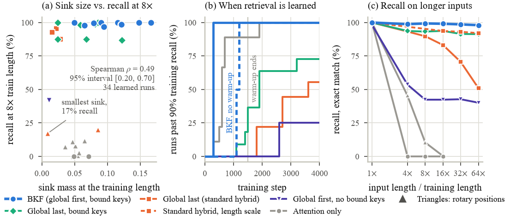
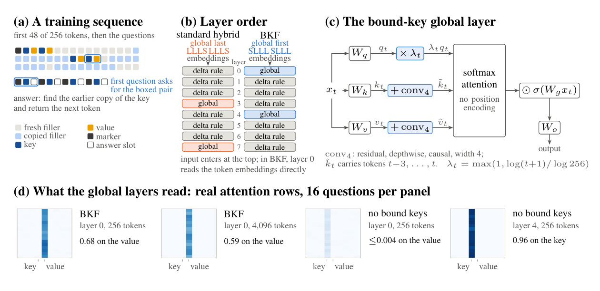
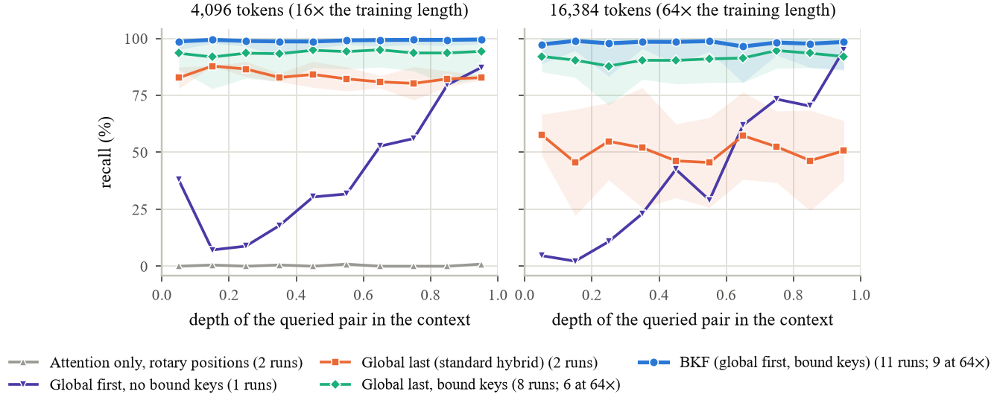

Layer Order and Key Binding Decides
Long-Context Retrieval in Hybrid Models
1Osmania University, Hyderabad, India 2Muffakham Jah College of Engineering and Technology, Hyderabad, India 3Jawaharlal Nehru Technological University Hyderabad, India 4Birla Institute of Technology and Science Pilani, Dubai Campus 5Athabasca University, Canada 6Wilmington University, United States
TL;DR. Sink size does not predict long-context retrieval; placing the global layer first with bound keys makes small hybrid models learn retrieval in every run by step 300 and keep 98% recall at 64 times the training length.

The question
Hybrid language models such as Qwen3-Next and Kimi Linear make most layers linear attention, which keeps a fixed-size memory, and add a few global attention layers for retrieval. New designs are often judged by the attention sink, the share of attention on the first token. We asked a narrower question: which design lets a hybrid learn retrieval early and keep it on inputs much longer than those seen in training?
We trained 49 small models (up to 1.9 million parameters) from 15 designs, changed one mechanism at a time, and tested key-value retrieval at every depth of inputs up to 64 times the training length.
What is new: BKF
BKF (bound keys, global layer first) changes the usual hybrid block in two ways:
- Global layer first. The block runs global, linear, linear, linear (SLLL) instead of linear, linear, linear, global (LLLS), so the global layer reads token embeddings directly.
- Bound keys. A short causal convolution (width 4) adds the three preceding tokens to each key and value of that layer, so one attention step can link a question to the matching value.

Why both parts are needed
Answering a question takes two steps: tie each value to the key just before it, then match the question against that tie. Bound keys do the first step inside the attention layer, so the lookup needs one layer instead of two. Placing that layer first lets it read token embeddings, which carry token identity from the first update, instead of the outputs of linear layers that are still changing. Each part alone leaves one obstacle: with bound keys but the global layer last, 8 of 11 runs learned, none before step 1,100; with the global layer first but no bound keys, 1 of 4 runs learned. With both, all 11 runs learned by step 300.
Results
| Design | Global layer | Runs learned | Median learning step | Recall at 16× |
|---|---|---|---|---|
| Softmax attention, rotary positions | attention only | 2/2 | 600 | 0.3% |
| Gated attention | attention only | 2/2 | 650 | 0.5% |
| Standard hybrid (Qwen3-Next / Kimi Linear layout) | last | 2/3 | 2,250 | 83.2% |
| Standard hybrid + bound keys | last | 8/11 | 1,700 | 93.8% |
| Global layer first, no bound keys (SWAN order) | first | 1/4 | 2,600 | 42.4% |
| BKF (ours) | first, bound keys | 11/11 | 300 | 99.1% |
Exact-match recall at 16 times the training length (4,096 tokens), averaged over runs that learned. The learning step is the first logged step with training recall above 90%. Selected rows of Table 2 in the paper, which lists all 15 designs.
At 64 times the training length (16,384 tokens), BKF kept 98.0% recall over nine runs. Global-last hybrids given the same length scale kept 91.4% to 92.1%, and the standard hybrid without it fell to 50.9%. Removing the first global layer of BKF at test time drops recall at 4,096 tokens from 99.0% to 0.2%, which places the lookup in that one layer.

Abstract
Language models accept million-token inputs yet often miss information far from the question. Hybrid models mix linear-attention layers with a few global layers, and new designs are often judged by the attention sink, the share of attention on the first token. This paper asks which designs let a hybrid learn retrieval early and keep the skill on longer inputs. Across 15 designs that each change one mechanism, 49 small models (up to 1.9 million parameters) are trained on a key-value retrieval task and tested at up to 64 times the training length. Existing designs face a trade-off. Attention-only models, including gated attention, sink logits and rectified softmax, learn within 1,900 steps but fail beyond twice the training length. Hybrids with the global layer last, as in Qwen3-Next and Kimi Linear, can extend to long inputs but learn late or never (13 of 20 runs learned). The proposed BKF (bound keys, global layer first) places the global layer first and adds a short convolution to the keys and values of that layer, so one attention step can link a question to the matching value. Only BKF both learned in every run by step 300 and held 98% recall at 64 times the training length, against 91% to 92% for global-last hybrids with the same length scale. The major finding is that layer order and key binding decide how early retrieval is learned, while sink size does not predict recall on long inputs.